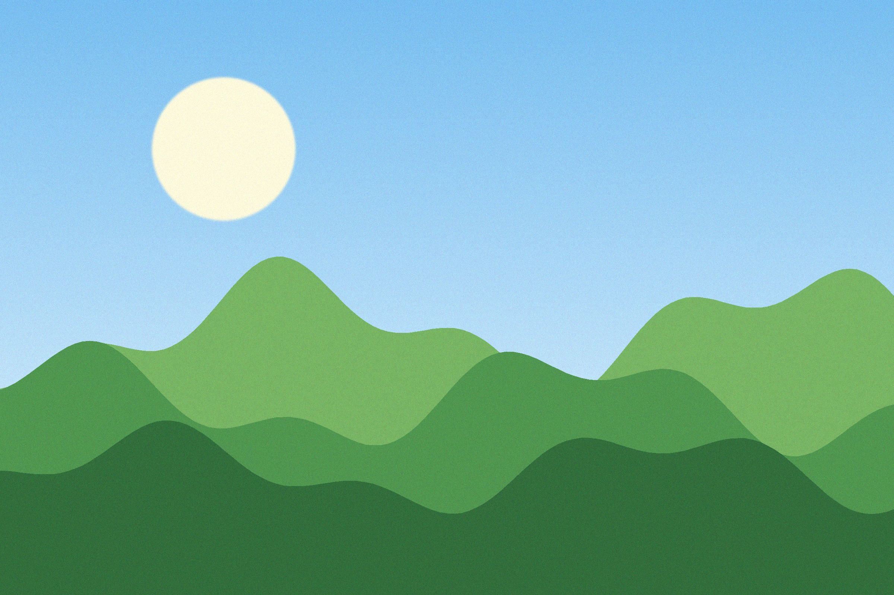
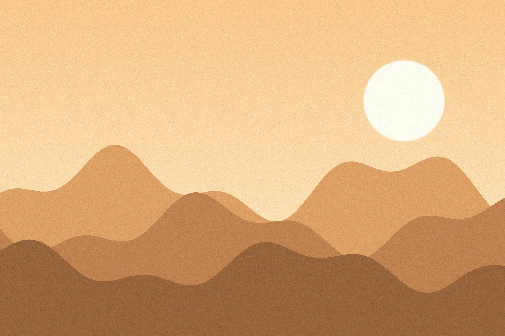
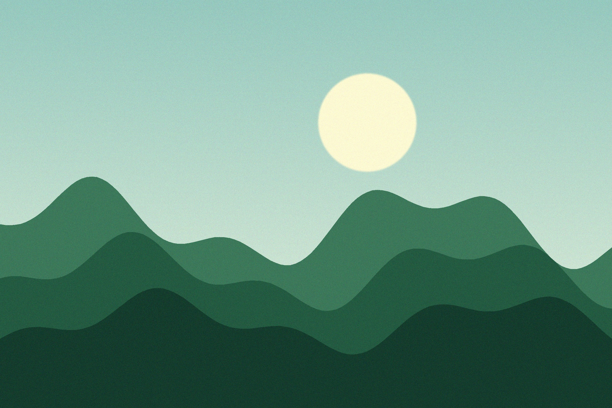

About this page
This is a simple, single-page gallery. Each section below shows one landscape with a short caption. Scroll down to see them all.



A small gallery of landscapes, from sunrise to dusk.
This is a simple, single-page gallery. Each section below shows one landscape with a short caption. Scroll down to see them all.


